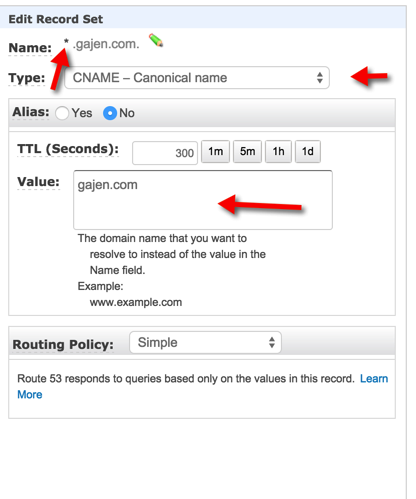
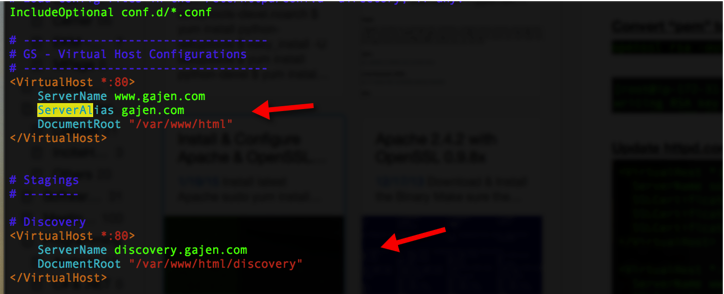

Set of instructions on how to host multiple sites on one red had based ec2 instance using one domain on route53.
Edit the httpd config file
Find the section that starts with <Directory “/var/www/html”>
<Directory "/var/www/html">
#
# Possible values for the Options directive are "None", "All",
# or any combination of:
# Indexes Includes FollowSymLinks SymLinksifOwnerMatch ExecCGI MultiViews
#
# Note that "MultiViews" must be named *explicitly* --- "Options All"
# doesn't give it to you.
#
# The Options directive is both complicated and important. Please see
# http:
# for more information.
#
Options Indexes FollowSymLinks
#
# AllowOverride controls what directives may be placed in .htaccess files.
# It can be "All", "None", or any combination of the keywords:
# Options FileInfo AuthConfig Limit
#
AllowOverride None
#
# Controls who can get stuff from this server.
#
Require all granted
</Directory>
Change AllowOverride None to AllowOverride All
Add NameVirtualHost
Edit the httpd config file
vi /etc/httpd/conf/httpd.conf
Add NameVirtualHost or add server IP
NameVirtualHost 202.54.1.1:80
Restart httpd
Add Vhost files
# My Virtual Hosts Config File for Two Domains
NameVirtualHost *:80
<VirtualHost *:80>
ServerAdmin webmaster@theos.in
DocumentRoot "/usr/local/docs/theos.in"
ServerName www.theos.in
ServerAlias theos.in
ErrorLog "/var/log/theos.in-error_log"
CustomLog "/var/log/theos.in-access_log" common
</VirtualHost>
<VirtualHost *:80>
ServerAdmin webmaster@nixcraft.com
DocumentRoot "/usr/local/docs/nixcraft.com"
ServerName www.nixcraft.com
ServerAlias nixcraft.com
ErrorLog "/var/log/nixcraft.com-error_log"
CustomLog "/var/log/nixcraft.com-access_log" common
</VirtualHost>
This can be stored in /etc/httpd/conf.d
Using Route53
Hosting multiple sites
Create a Canonical name with wild card to route all the sub domains traffic to the root web server located

Now add sub domains details along with root domain routings like below
